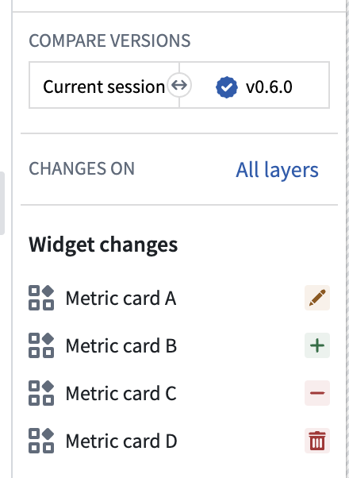
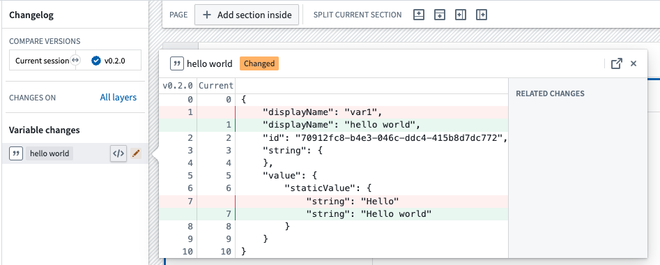
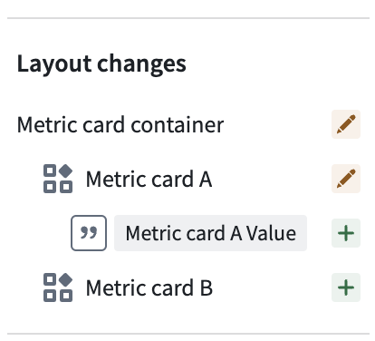

The Workshop Changelog Panel allows builders to visualize changes between module versions. This is useful for tracking modifications made over time and identifying which change potentially caused an issue when debugging problems with the module.
If changes exist for the selected module versions, the panel will be populated with changelog nodes. There are 5 different types of changes:
unused widgets.
The image above conveys the following:
You can inspect the change node further by opening the JSON diff. Here, you can see the exact changes made to the node. In the screenshot below, we can see the variable value changed from Hello to Hello world and the variable name changed from var1 to hello world.

Additionally, the Changelog Panel displays a visual hierarchy of changes. In the example below, we can infer from the hierarchy that the Metric card container section contains the Metric card A widget, and both were modified. Furthermore, we see Metric card A value is used within Metric card A and was added to the module.

There are two options for selecting module versions:
Range selection: Choose a start and end version to see the changes between the two. For example, you can select 0.1.0 and 0.4.0 to see the changes between version 0.1.0 and 0.4.0.
Single selection: Single selection allows you to see the changes in a specific module version compared to the previous version. For example, if you select version 0.5.0, the changelog will populate with the changes between 0.4.0 and 0.5.0.
When rebasing is required before merging changes from a branch into main, the Changelog panel displays a visual notification dot and provides an option to begin the rebase.
If you need to incorporate changes from main, follow the rebasing and conflict resolution visual guide to review diff icons, compare branch configurations, and resolve conflicts.
During rebasing, the Changelog panel depicts changes being applied from your branch to the latest main version of the module and highlights merge conflicts. A change is marked as a conflict when it was modified both on main and on your branch. Common examples include:
main and your branch.main and edited on the branch.A to B on main and from A to C on your branch.While resolving conflicts, you can switch the module between three states to evaluate outcomes in real time:
main.Once conflicts are resolved and you are satisfied with the module, save to finish rebasing. You can then safely merge your branch into main.